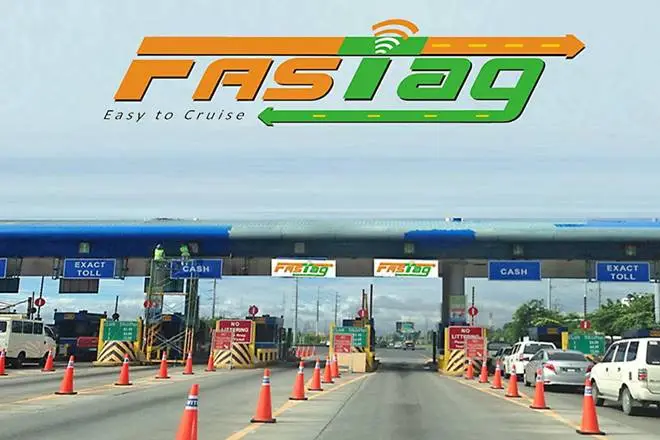

Liveasy
How FAST TAG improves the good transport?

Fast Tag
01 INTRODUCTION
FASTag is an electronic toll collection system in India, operated by the National Highway Authority of India (NHAI). It employs Radio Frequency Identification (RFID) technology for making toll payments directly from the prepaid or savings account linked to it or directly toll owner. It is affixed on the windscreen of the vehicle and enables to drive through toll plazas without stopping for transactions. The tag can be purchased from official Tag issuers or participating Banks and if it is linked to a prepaid account, then recharging or top-up can be as per requirement. The minimum recharge amount is ₹100 and can be done online.
02 CONTENT
As of now only a few truck drivers have FASTAG system on their vehicles but in near future, all drivers would have FASTAG on their vehicles by which time and efforts would be saved by eliminating the need to stand in long queues for hours but the question arises that how does it going to take place.


02.1 What is the work of FASTag??
FASTag allows an end-customer to pay the toll without stopping their vehicle at the toll plaza. FASTags, attached to the windscreens of vehicles, use Radio Frequency Identification Technology (RFID) to enable the electronic payment of tolls while the vehicle is in motion
When the QR code and tag identification number are read by an RFID antenna in the toll gate canopy, the boom barrier is raised to enable the vehicle to pass through. The color of the FASTag is different for various vehicles. There are black, blue, green, pink, orange, and violet tags. Different vehicles are represented by different colors.
When the QR code and tag identification number are read by an RFID antenna in the toll gate canopy, the boom barrier is raised to enable the vehicle to pass through. The color of the FASTag is different for various vehicles. There are black, blue, green, pink, orange, and violet tags. Different vehicles are represented by different colors.

02.2 Benefits of Using FASTag
- Saves time: Using the FASTag technology, you will not have to lower the speed of your vehicle at the toll plazas.
- Avoids traffic jams: Since the traffic does not have to stop or slow down, there is almost no congestion or traffic jam at the toll plazas
- Eliminates the hassle of cash payments: Traveling from one city/state to another by road comes across a lot of toll plazas.
- Saves the environment: The FASTag facility benefits the environment in the long run, as it reduces the use of paper and fuel
- Offers monthly travel pass: Regular travelers can apply to convert their monthly, regular passes into FASTag passes.
- Easy online recharge: While various other digital wallets let you recharge your FASTag on your mobile phone in a matter of minutes
02.3 Future of FASTag
So in the future firstly the industry will move towards the betterment of drivers' life for example as of now only a few truck drivers have FASTAG system on their vehicles but in near future, all drivers would have FASTAG on their vehicles by which time and efforts would be saved by eliminating the need to stand in long queues for hours but the question arises that how does it going to take place.
That's where New age Startups and Traditionals companies will step in. They will make drivers families with the new age technology which would eventually help them to generate a good source of income through driving. Through technological advancement, there won't be any hassle in RTO. There would be more training for the truck drivers so that they could know the basics of everything.
That's where New age Startups and Traditionals companies will step in. They will make drivers families with the new age technology which would eventually help them to generate a good source of income through driving. Through technological advancement, there won't be any hassle in RTO. There would be more training for the truck drivers so that they could know the basics of everything.

03 CONCLUSION
In conclusion, technology has changed the way we do business. Thus, by connecting the truck owners and lenders using the FASTag as a point of sale delivery of the loan, the trucking industry and in turn the Indian economy’s growth, can be fuelled using cashless transactions and lending.